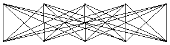
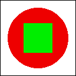

Answers for Quiz on Chapter 6
This page contains sample answers to the quiz on Chapter 6 of Introduction to Programming Using Java. Note that generally, there are lots of correct answers to a given question.
| Question 1: |
Programs written for a graphical user interface have to deal with "events." Explain what is meant by the term event. Give at least two different examples of events, and discuss how a program might respond to those events. |
| Answer: |
An event is anything that can occur asynchronously, not under the control of the program, to which the program might want to respond. GUI programs are said to be "event-driven" because for the most part, such programs simply wait for events and respond to them when they occur. In many (but not all) cases, an event is the result of a user action, such as when the user clicks the mouse button, types a character, or clicks a button. The program might respond to a mouse-click on a canvas by drawing a shape, to a typed character by adding the character to an input box, or to a click on a button by clearing a drawing. More generally, a programmer can set up any desired response to an event by writing an event-handling routine for that event. |
| Question 2: |
Explain carefully what the repaint() method does. |
| Answer: |
The repaint() method of a component is called to notify the system that the component needs to be redrawn. It does not itself do any drawing (neither directly nor by calling the paintComponent() routine). You should call repaint() when you have made some change to the state of the applet that requires its appearance to change. Sometime shortly after you call it, the system will call the component's paintComponent() routine. |
| Question 3: |
What is HTML? |
| Answer: |
HTML, or HyperText Markup Language, is a language that is used for writing Web pages. An HTML document contains all the text on a Web page, "marked up" with "tags" that determine how the text looks -- its size and color and how it is broken into paragraphs, for example. Other tags can include things like horizontal lines, images, links, and applets on the page. A Web browser acts as an interpreter for the HTML language. |
| Question 4: |
Java has a standard class called JPanel. Discuss two ways in which JPanels can be used. |
| Answer: |
A JPanel is a type of component. That is, it is a visible element of a GUI. By itself, a JPanel is simply a blank rectangular region on the screen. However, a JPanel is a "container", which means that other components can be added to it and will then appear on the screen inside the JPanel. A JPanel can also be used as a drawing surface. In order to do this, it is necessary to create a subclass of JPanel and define a paintComponent() method in that subclass. An object belonging to that subclass can then be added to another panel or other container. The paintComponent() method defines how that object will draw itself on the screen. |
| Question 5: |
Draw the picture that will be produced by the following paintComponent() method: public static void paintComponent(Graphics g) {
super.paintComponent(g);
for (int i=10; i <= 210; i = i + 50)
for (int j = 10; j <= 210; j = j + 50)
g.drawLine(i,10,j,60);
}
|
| Answer: |
The outer loop is executed for values of i equal to 10, 60, 110, 160, and 210. For each of these values, the inner loop is executed for j equal to 10, 60, 110, 160, and 210. The drawLine command is therefore executed 25 times -- and so, 25 different lines are drawn. These lines connect the five points (10,10), (60,10), (110,10), (160,10), and (210,10) to the five points (10,60), (60,60), (110,60), (160,60), and (210,60) in all possible pairings. Here is the picture:  |
| Question 6: |
Suppose you would like a panel that displays a green square inside a red circle, as illustrated. Write a paintComponent() method for the panel class that will draw the image.  |
| Answer: |
(The size of the square and circle are not specified in the problem, so any size would be acceptable, as long as the square is in the middle of the circle. Notice that the drawing commands are fillOval and fillRect. There are no special routines for drawing circles or squares.) public void paintComponent(Graphics g) {
super.paintComponent(g);
g.setColor(Color.red);
g.fillOval(10,10,80,80);
g.setColor(Color.green);
g.fillRect(30,30,40,40);
}
|
| Question 7: |
Java has a standard class called MouseEvent. What is the purpose of this class? What does an object of type MouseEvent do? |
| Answer: |
When an event occurs, the system packages information about the event into an object. That object is passed as a parameter to the event-handling routine. Different types of events are represented by different classes of objects. An object of type MouseEvent represents a mouse or mouse motion event. It contains information about the location of the mouse cursor and any modifier keys that the user is holding down. This information can be obtained by calling the instance methods of the object. For example, if evt is a MouseEvent object, then evt.getX() is the x-coordinate of the mouse cursor, and evt.isShiftDown() is a boolean value that tells you whether the user was holding down the Shift key. |
| Question 8: |
One of the main classes in Swing is the JComponent class. What is meant by a component? What are some examples? |
| Answer: |
A JComponent represents a visual component of the computer's graphical user interface. A JComponent is not completely independent. It must be added to a "container," such as a panel. Examples of JComponents are JButtons, JTextFields, and JPanels. |
| Question 9: |
What is the function of a LayoutManager in Java? |
| Answer: |
A LayoutManager implements some policy for laying out all the visual components that have been added to a container, such as a JPanel or the content pane of a JApplet. That is, it sets the sizes and positions of the components. Different types of layout managers have different rules about how components are to be arranged. Some standard layout manager classes are BorderLayout and GridLayout. |
| Question 10: |
What type of layout manager is being used for each of the three panels in the following illustration from Section 6.7?
|
| Answer: |
The main panel, shown in blue, seems to be using a GridLayout with two rows and one column. A GridLayout is most likely since the two components in the main panel -- the other two panels -- are exactly the same size. Similarly, the bottom subpanel, shown in green, seems to be using a GridLayout with one row and three columns. The top subpanel, shown in red, could be using a BorderLayout. The components on the left and right ends of the subpanel would be in the WEST and EAST positions of the BorderLayout. Each of these components would then be shown at its own preferred width, which would explain how their widths could be different. The third component, in the center of the subpanel, would then be in the CENTER position. |
| Question 11: |
Explain how Timers are used to do animation. |
| Answer: |
Displaying an animation requires showing a sequence of frames. The frames are shown one after the other, with a short delay between each frame and the next. A Timer can generate a sequence of ActionEvents. When a timer is used to do animation, each event triggers the display of another frame. The ActionListener that processes events from the timer just needs to be programmed to display a new frame each time its actionPerformed() method is called. |
| Question 12: |
What is a JCheckBox and how is it used? |
| Answer: |
A JCheckBox is a component that has two possible states, "selected" and "not selected". The user can change the state by clicking on the JCheckBox. If box is a variable of type JCheckBox, then a program can set the state of the box to "selected" by calling box.setSelected(true) and can unselect the box by calling box.setSelected(false). The current state can be determined by calling box.isSelected(), which is a boolean-valued function. A JCheckBox generates an event of type ActionEvent when it changes state. A program can listen for these events if it wants to take some action at the time the state changes. Often, however, it's enough for a program simply to look at the state of the JCheckBox when it needs it. |